Fun with Filters and Frequencies
Building filters up from convolution, then using them to sharpen, hybridise and blend images.
Other than Part 1.1 (where convolution is written from scratch with numpy), all the filtering
uses scipy.signal.convolve2d with mode="same" (so the output is the same size
as the input) and boundary="symm" (the image is mirrored past its edge, so a blur does
not pull in black from outside the image). Every Gaussian comes from
cv2.getGaussianKernel with a half-width of 3 sigma, so sigma = 2 gives a 13 x 13 kernel.
Part 1.1: Convolutions from scratch
Main idea: flip the kernel, slide it over the image, and at each position multiply the
overlapping values and add them up. Without padding, the kernel can only sit where it fully fits,
so the output would be smaller than the image. So the image is zero padded first. For
"same" output (same size as the image) a k x k kernel needs (k - 1) / 2 zeros on each
side, and for "full" output (every position where the kernel overlaps the image at
all) it needs k - 1. For even sized kernels scipy puts the extra row and column on the top and
left, so the padding does the same to get identical results.
def pad(im, kernel_shape, mode="same"):
kh, kw = kernel_shape
if mode == "full":
widths = ((kh - 1, kh - 1), (kw - 1, kw - 1))
else:
widths = ((kh // 2, (kh - 1) // 2), (kw // 2, (kw - 1) // 2))
return np.pad(im, widths)
The four loop version goes over every output pixel (two loops), and for each one, every kernel
entry (two more loops). The kernel is flipped with [::-1, ::-1] first, since without
the flip it would be correlation instead of convolution.
def conv_four_loops(im, kernel, mode="same"):
flipped = kernel[::-1, ::-1]
kh, kw = flipped.shape
padded = pad(im, flipped.shape, mode)
out = np.zeros((padded.shape[0] - kh + 1, padded.shape[1] - kw + 1))
for i in range(out.shape[0]):
for j in range(out.shape[1]):
total = 0.0
for m in range(kh):
for n in range(kw):
total += padded[i + m, j + n] * flipped[m, n]
out[i, j] = total
return outThe two loop version replaces the inner two loops with one elementwise multiply between the window and the kernel, and then a sum.
def conv_two_loops(im, kernel, mode="same"):
flipped = kernel[::-1, ::-1]
kh, kw = flipped.shape
padded = pad(im, flipped.shape, mode)
out = np.zeros((padded.shape[0] - kh + 1, padded.shape[1] - kw + 1))
for i in range(out.shape[0]):
for j in range(out.shape[1]):
out[i, j] = np.sum(padded[i : i + kh, j : j + kw] * flipped)
return outThe kernels are a 9 x 9 box filter (every entry is 1/81, so it takes the average) and the two finite differences:
BOX_9 = np.ones((9, 9)) / 81
D_X = np.array([[1, 0, -1]], dtype=float)
D_Y = D_X.T
To check that they are correct, both versions and convolve2d(im, kernel, mode)
(which zero pads by default) were run on the cameraman image in both modes, and the outputs were
compared. On top of the three kernels above, a random 4 x 5 kernel was also tested, since the box
and difference filters are (almost) symmetric, so a missing flip or padding that is off by one
would not show up with them. All of them match scipy to within about 3e-15, which is just floating
point rounding (the numbers are added up in a different order).
My photo with the three filters
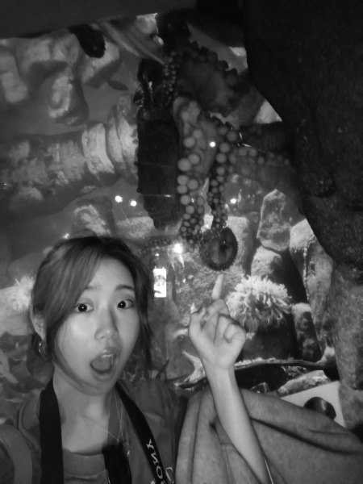
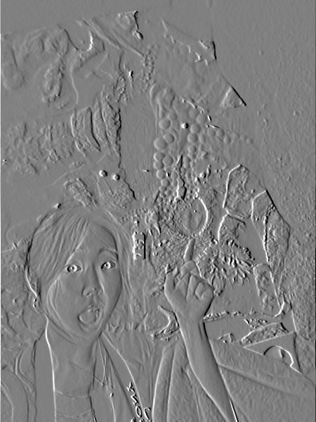
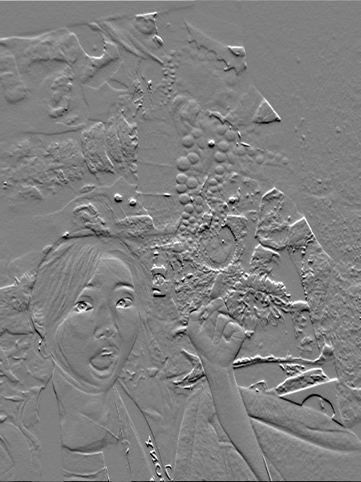
The box filter blurs everything evenly. Dx picks up vertical edges (like the sides of my face and fingers) and Dy picks up horizontal edges (like my eyebrows and mouth). The derivatives can be negative, so 0 is shown as mid grey: brighter than grey means the image gets brighter going right (or down), and darker than grey means it gets darker. (Convolving with [1, 0, -1] flips it, so the output is I(x + 1) - I(x - 1).)
Runtime
Times on the 534 x 534 cameraman image, in seconds (they move by about 10% between runs):
| kernel | mode | four loops | two loops | scipy |
|---|---|---|---|---|
| 9 x 9 box | same | 9.69 | 2.22 | 0.064 |
| 9 x 9 box | full | 9.50 | 2.09 | 0.063 |
| Dx | same | 0.48 | 1.79 | 0.005 |
| Dx | full | 0.46 | 1.78 | 0.006 |
| Dy | same | 0.49 | 1.73 | 0.010 |
| Dy | full | 0.47 | 1.93 | 0.010 |
For the 9 x 9 box, two loops is about 4.4 times faster than four loops, since the 81 Python
multiply-adds per pixel become one numpy call. Scipy is then about 30 times faster than two loops,
since all of its looping is done in compiled code. For Dx and Dy though, four
loops is actually faster than two loops. The kernel only has 3 entries, so the inner loops are
tiny, while the two loop version still has to slice a window and call np.sum at every
pixel. That costs about 2 s no matter what the kernel is, so two loops only wins when the kernel
is big enough. Same and full take about the same time, since full only adds k - 1 rows and
columns.
Boundaries
With zero padding, part of the kernel sits on zeros near the border. For the box filter this
averages black into the edge pixels, which is the dark rim round my blurred photo above. For
Dx and Dy it makes a fake edge round the whole image, since the image
suddenly drops to 0 there. Both scratch versions do exactly what scipy does by default
(boundary="fill", fillvalue=0). Scipy can also mirror the image instead
(boundary="symm"), which gets rid of the rim, and this is why it is used from Part 1.2
onwards.
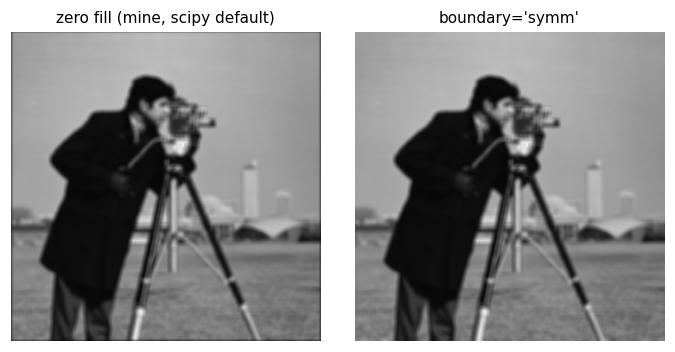
Part 1.2: Finite difference operator
Main idea: an edge is where the brightness changes quickly. So convolving the cameraman with Dx and Dy gives the partial derivatives Ix and Iy, and then the gradient magnitude sqrt(Ix2 + Iy2) is large wherever the brightness changes quickly in any direction. (The cameraman png has a white frame round it, so any row or column that is completely white is trimmed off when loading, otherwise the frame shows up as a strong edge.)
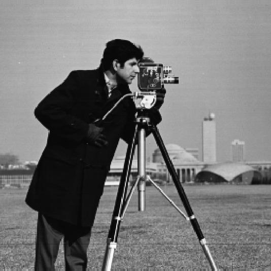
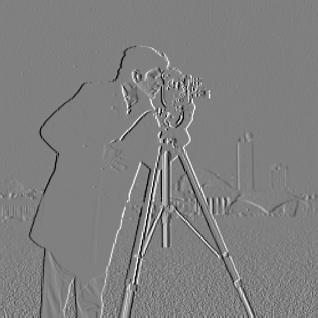
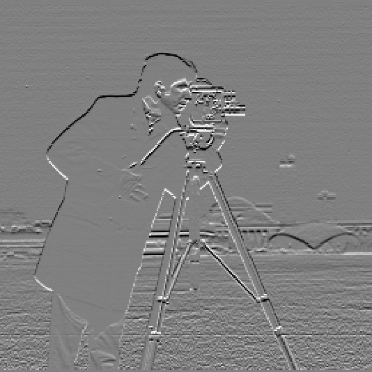
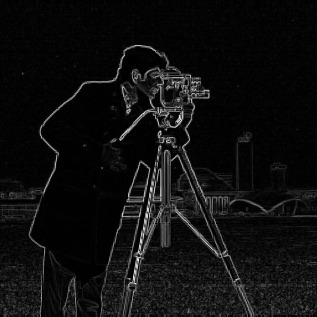
To turn this into an edge image, every pixel with a gradient magnitude above a threshold is kept. The pixel values are in [0, 1], so the thresholds are in the same units:
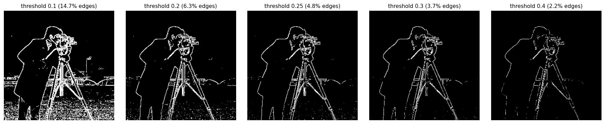
At 0.1 (14.7% of pixels) the grass is covered in speckles, and at 0.2 there are still a lot of them. At 0.3 and 0.4 the grass is clean, but the tripod legs start breaking up and most of the buildings in the background disappear. So 0.25 (4.8% of pixels) was chosen, where the outline of the man, the camera and all three tripod legs are still complete, and some of the buildings are still there. A few specks are left in the grass, but keeping the real edges whole was more important than removing every bit of noise.
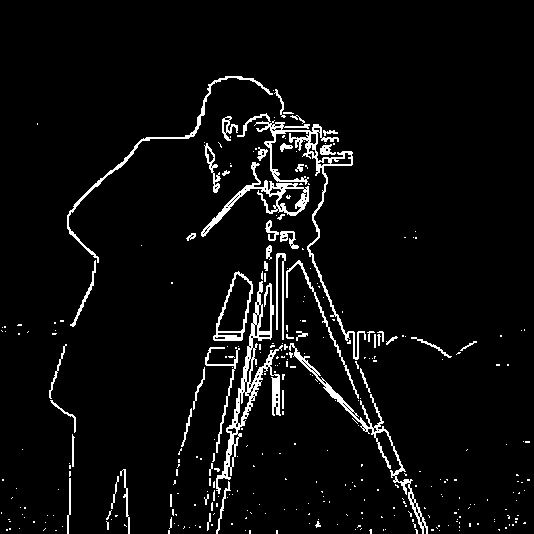
Part 1.3: Derivative of Gaussian (DoG) filter
The finite difference only compares neighbouring pixels, so noise (like the texture of the
grass) looks just as much like an edge as a real outline. So the image is first blurred with a
Gaussian G, made from cv2.getGaussianKernel(13, 2) and its outer product with itself
(sigma = 2, 13 x 13), and then the derivatives of the blurred image are taken.
def gaussian_kernel_1d(sigma):
size = 2 * int(np.ceil(3 * sigma)) + 1
return cv2.getGaussianKernel(size, sigma).ravel()
def gaussian_kernel_2d(sigma):
g = gaussian_kernel_1d(sigma)
return np.outer(g, g)

Blurring spreads each change in brightness over several pixels, so the gradient gets smaller (the largest value drops from 0.91 to 0.30). This means the old threshold of 0.25 would throw away almost everything, so it was lowered to 0.1 (7.1% of pixels), picked the same way as before.
What differences do you see?
With the blur, the noise in the grass is gone and the edges are continuous lines instead of broken dotted ones, so the outline of the man and the tripod legs are much cleaner. On the other hand, the edges are thicker and less precise, thin objects like the tripod legs show up as two parallel lines (one for each side of the leg), and small, faint details like the buildings in the background are weaker, since the blur smooths them out along with the noise.
DoG filters
Convolution is associative, so (I * G) * Dx = I * (G * Dx). This means the
Gaussian can be convolved with the derivative first, giving the same result with only one
convolution on the image per direction. The DoG filters are built with mode="full" so
nothing gets cut off (13 x 15 for x and 15 x 13 for y).
dog_x = convolve2d(g, D_X, mode="full")
dog_y = convolve2d(g, D_Y, mode="full")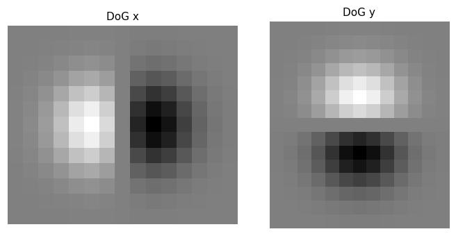
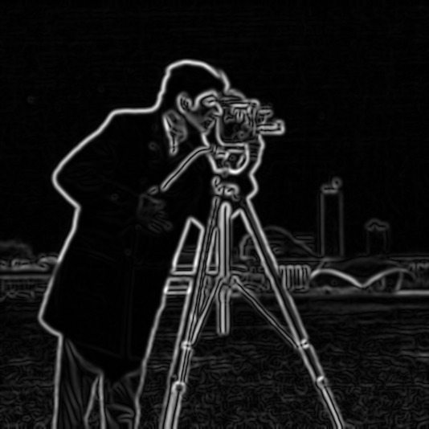
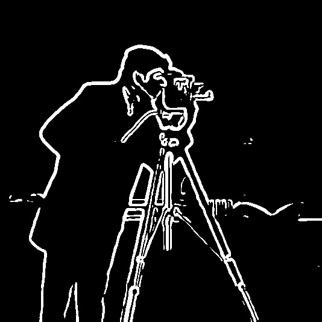
This gives the same result as blurring and then taking the differences. The largest difference in gradient magnitude between the two is 9.9e-16, and after thresholding, 0 pixels are different.
Bells & Whistles: gradient orientation
The gradient points in the direction where the brightness increases fastest. Main idea: colour
each pixel by that direction, without computing the angle itself (so no arctan2 or
np.angle). Dividing (Ix, Iy) by the magnitude gives the unit
vector (cos t, sin t), where t is the gradient angle. Then each colour channel is
0.5 + 0.5 cos(t - a), with a = 0, 120 and 240 degrees for red, green and blue. Since
cos(t - a) = cos t cos a + sin t sin a, this only needs the unit vector and the fixed constants
cos a and sin a, so t itself is never computed. The colours still work like a colour wheel (they
go all the way round and come back to the start when the direction does a full turn). And then
the colours are multiplied by the gradient magnitude, so flat areas stay dark and only the edges
are coloured. The DoG gradients are used here since the finite difference ones are too noisy.
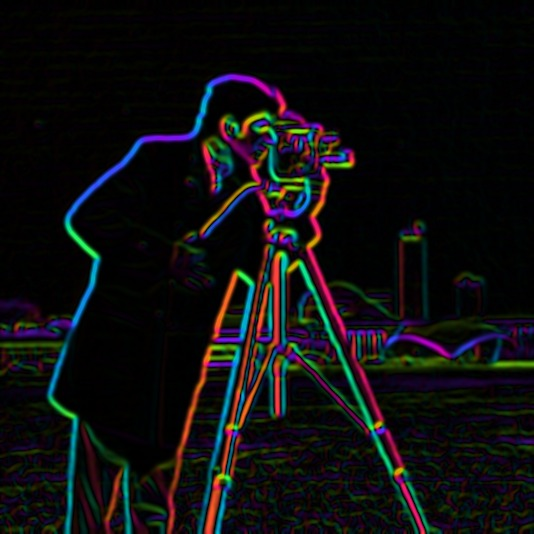
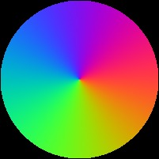
The two sides of each tripod leg come out in opposite colours (orange on one side and cyan on the other), since one side goes from light to dark and the other goes from dark to light. Along the man's back (dark coat against bright sky), the colour changes gradually from purple to blue to green as the outline curves, since the direction of the edge is turning.
Part 2.1: Image "sharpening"
Main idea: a Gaussian is a low pass filter (blurring keeps the slow changes in brightness and removes the fast ones), so subtracting the blurred image from the original leaves only the high frequencies (edges and fine texture). An image looks sharper when its high frequencies are stronger, so the unsharp mask adds alpha times the high frequencies back onto the image:
sharpened = I + alpha (I - I * G) = I * ((1 + alpha) e - alpha G)
where e is the unit impulse (a kernel that is 1 in the middle and 0 everywhere else, so convolving with it does nothing). The second form is just one kernel, so the whole thing is a single convolution. The kernel adds up to 1 (1 + alpha - alpha), so flat areas stay the same and only areas with detail change. Each colour channel is sharpened separately.
def unsharp_mask_kernel(sigma, alpha):
g = gaussian_kernel_2d(sigma)
impulse = np.zeros_like(g)
impulse[g.shape[0] // 2, g.shape[1] // 2] = 1
return (1 + alpha) * impulse - alpha * g
def sharpen(im, sigma, alpha):
return np.clip(convolve(im, unsharp_mask_kernel(sigma, alpha)), 0, 1)The single kernel was compared with doing the three steps separately (blur, subtract, add back), and the largest difference is 1.2e-15 on the Taj Mahal and 2.4e-15 on the other image.
Taj Mahal (sigma = 2, alpha = 1)


Changing the sharpening amount

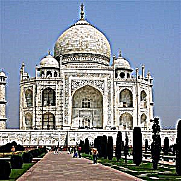
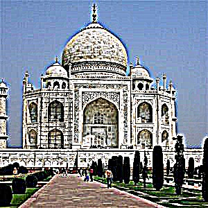
At 0.5 there is only a small change. At 1 and 2 the carvings, windows and railings are clearly sharper without looking unnatural. At 5 there are bright halos along the outline of the dome, and the sky and path look grainy, since the JPEG noise is also high frequency so it gets boosted along with the real details. At 10 it looks harsh and overprocessed.
My image: Point Lobos (sigma = 3, alpha = 1)
This photo has about four times as many pixels as the Taj Mahal one, so a wider Gaussian (sigma = 3, a 19 x 19 kernel) was used to get a similar range of detail.
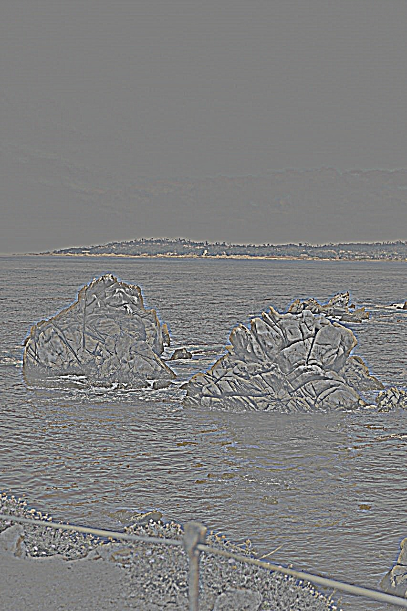

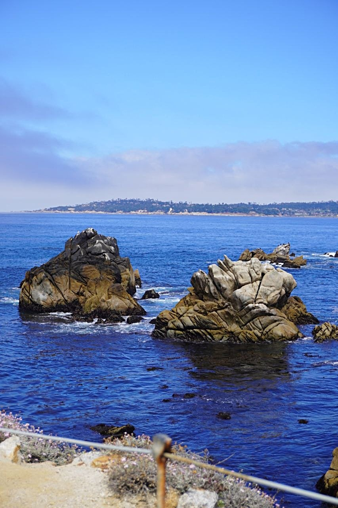
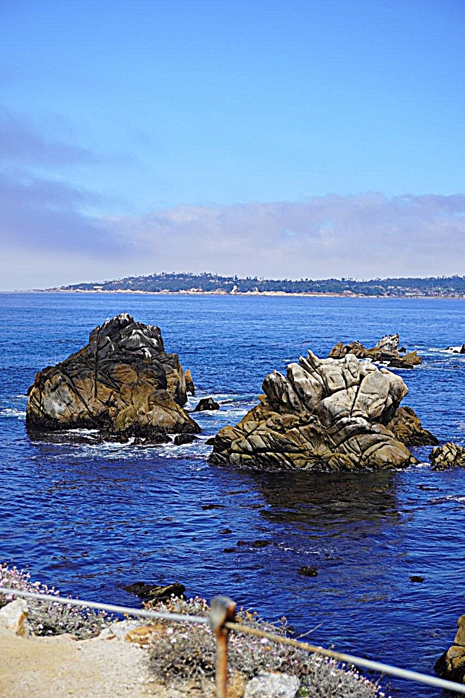
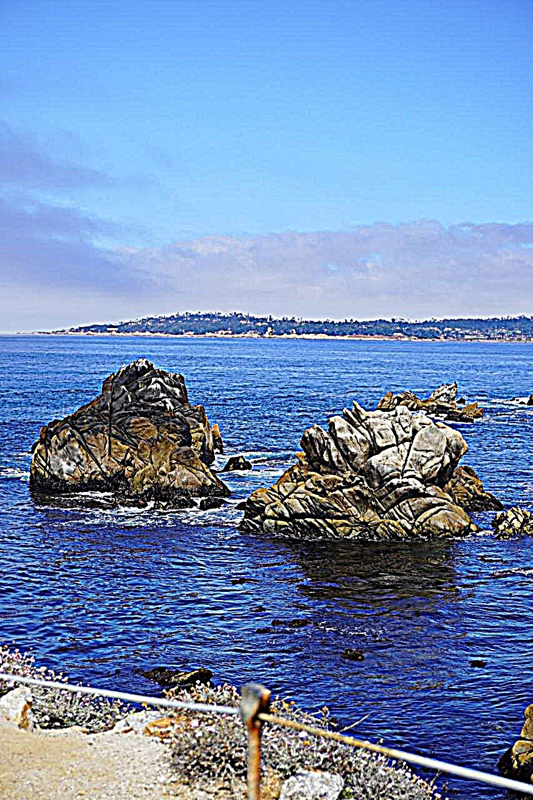
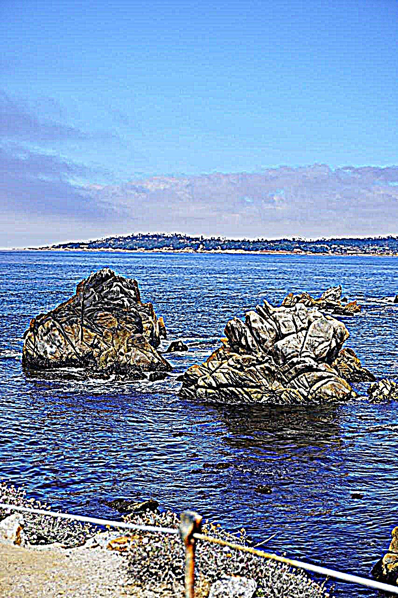
It is the same pattern as the Taj Mahal. The rocks and the ripples in the water get more texture as alpha goes up, and at 5 and 10 the water looks noisy and the colours at the edges look oversaturated.
Blur, then sharpen again
To see how much sharpening can actually recover, the (sharp) Point Lobos photo was blurred with sigma = 3, and then the blurred version was sharpened with the same Gaussian. PSNR (peak signal to noise ratio, where higher means closer) is used to measure how close each result is to the original. Here is a close up of the rocks:
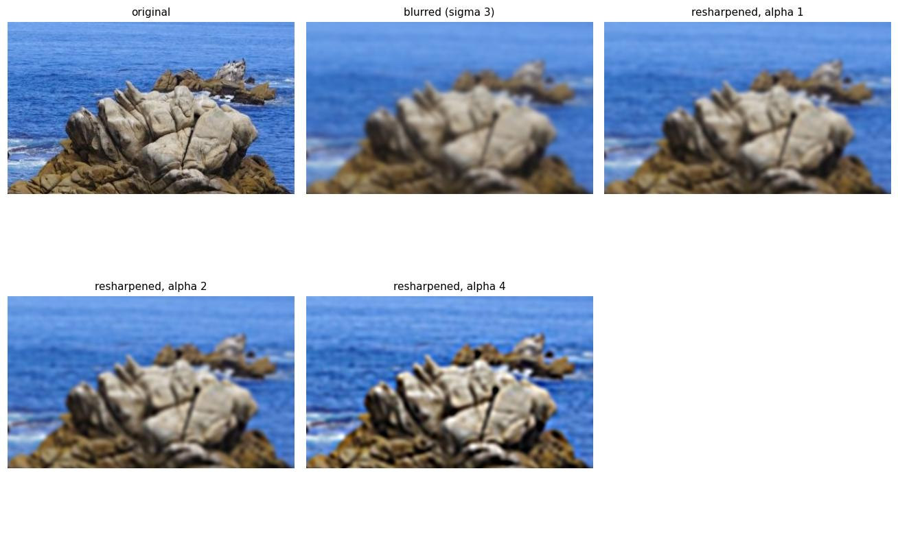
| image | PSNR vs original |
|---|---|
| blurred | 27.2 dB |
| resharpened, alpha = 1 | 28.3 dB |
| resharpened, alpha = 2 | 28.8 dB |
| resharpened, alpha = 4 | 27.7 dB |
Sharpening does help, since the outlines of the rocks and the crack down the middle get their contrast back and it looks less blurry than the blurred version. But it still does not look like the original. The fine texture (the grain of the rock, the small ripples and the birds on the rocks at the back) does not come back at all. This is because unsharp masking can only boost frequencies that are still in the image, and the sigma = 3 blur has already brought the finest ones down to almost zero, so there is nothing left to boost. Increasing alpha to 4 does not bring them back either, it just exaggerates the middle frequencies into halos, which is why the PSNR goes back down. So sharpening makes an image look sharper, but it cannot recover detail that is already lost.
Part 2.2: Hybrid images
Hybrid images (Oliva, Torralba and Schyns, SIGGRAPH 2006) look different depending on how far away you are. Up close the high frequencies dominate what we see, but from far away only the low frequencies are visible. Main idea: take the low frequencies of one image (a Gaussian blur) and the high frequencies of another image (the image minus its Gaussian blur, which is the impulse minus Gaussian filter), and add them together.
hybrid = (I1 - I1 * Gsigma_high) + I2 * Gsigma_low
def hybrid_image(im_high, im_low, sigma_high, sigma_low):
high = high_pass(im_high, sigma_high) # im_high - blur(im_high, sigma_high)
low = blur(im_low, sigma_low)
if high.ndim != low.ndim: # one grey, one colour
high, low = (high[..., None], low) if high.ndim == 2 else (high, low[..., None])
return np.clip(high + low, 0, 1)
The stacks in Part 2.3 need very wide Gaussians, so blur blurs the rows with the 1D
Gaussian and then the columns. The 2D Gaussian is the outer product of the 1D one, so this gives
the same result as one 2D convolution, but it costs 2k instead of k2 per pixel.
Aligning
The starter code aligns two images using two clicked points on each (it matches the centre,
scale and rotation of the two points). Clicking is not repeatable, so align_images was
changed so it can also take the points directly. The points were picked by reading the coordinates
off a copy of each photo with a grid drawn on it (the two eyes for faces, and the left and right
edges of the dish for the rice and pizza). The starter code pads with black while it recentres and
rotates, so an extra channel of ones is passed through the same alignment to mark which pixels
are real, and then both images are cropped to a rectangle where both are real. The fox picture is
a cut-out on white with its eyes very near the top, so its white background is extended in code
before aligning, otherwise most of the clown gets cropped off. The rice and pizza photos are
2560 x 1920, so both are shrunk to 40% first, and after aligning the bottom 90 rows are cropped off
since both photos have the camera's red date stamp there.
For the main results both images are converted to greyscale, like in the paper. Colour is in the bells and whistles section below.
Derek + Nutmeg: the full process
Nutmeg gives the high frequencies (the whiskers and fur are almost all fine detail) and Derek gives the low frequencies, so up close it should look like a cat and from far away it should look like Derek.
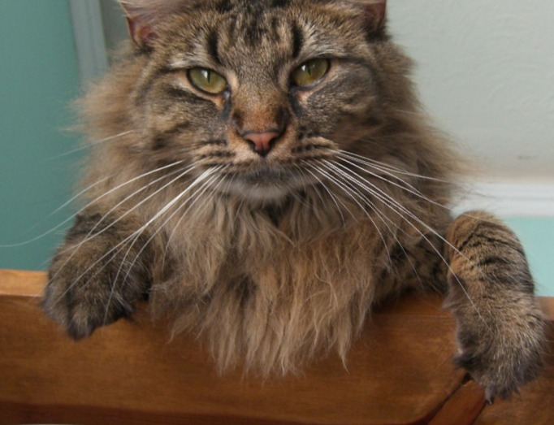
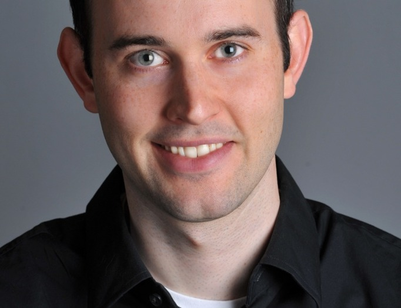
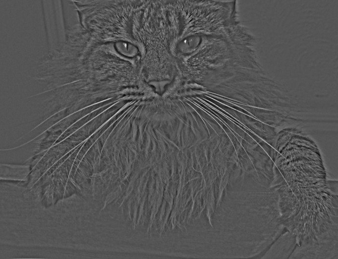
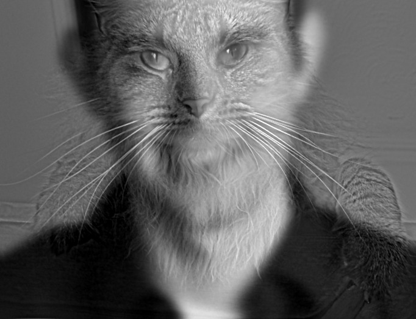
Here is the log magnitude of the Fourier transform at each step (the centre is frequency 0, and further out means higher frequency), all on the same colour scale so they can be compared:
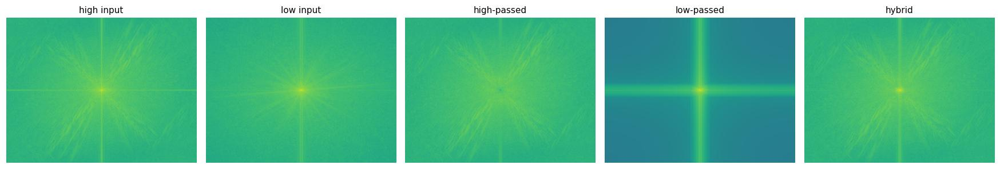
High-passing Nutmeg removes the bright spot at the centre (the low frequencies) and keeps the rest. Low-passing Derek does the opposite, so everything away from the centre becomes much darker. The hybrid's spectrum is the two added together, with Derek in the middle and Nutmeg everywhere else. The bright horizontal and vertical lines through the centre do not come from the picture itself. The Fourier transform treats the image as if it repeats, so the jump from the right edge back to the left edge (and bottom to top) counts as a sharp edge, and the blur cannot fully remove it.
Choosing the cutoff frequencies
The cutoff of each Gaussian is taken as the frequency where it lets through half the amplitude. The Fourier transform of a Gaussian with standard deviation sigma is exp(-2 pi2 sigma2 f2), and setting that to 0.5 gives f = 0.187 / sigma cycles per pixel. The low pass keeps what is below its cutoff, and the high pass keeps what is above its cutoff. From trial and error, leaving a gap between the two cutoffs works best (sigma_low about twice sigma_high), so the middle frequencies (which can be seen from both near and far) do not show both images at the same time.
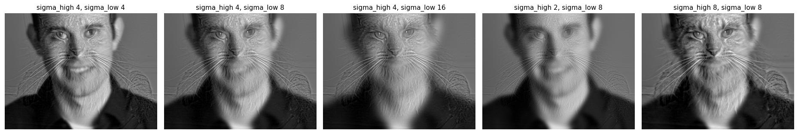
With sigma_low = 4, Derek is too sharp (his eyes and smile are clear even up close), so he competes with the cat. With sigma_low = 16 he becomes a blob, so the cat shows up close but from far away it is hard to tell it is Derek. With sigma_high = 2, only the finest details of the cat are kept (mostly the whiskers), so Derek shows even up close. With sigma_high = 8, the cat's stripes and eye shapes come through as well, and those are big enough to still be seen from further away, so the cat never goes away. This is why sigma_high = 4 and sigma_low = 8 were chosen, since that is where each image shows at its own distance.
| hybrid | high frequencies from | low frequencies from | sigma_high (cutoff) | sigma_low (cutoff) |
|---|---|---|---|---|
| Derek + Nutmeg | Nutmeg | Derek | 4 (0.047 cycles/px) | 8 (0.023 cycles/px) |
| Clown + fox | clown | fox | 2 (0.094 cycles/px) | 5 (0.037 cycles/px) |
| Rice + pizza | rice | pizza | 4 (0.047 cycles/px) | 8 (0.023 cycles/px) |
The clown + fox hybrid is smaller (360 x 360 after aligning), so the same blur would cover more of the picture. This is why its sigmas are smaller, to keep the cutoffs about the same relative to the size of the faces.
Viewing them
Drag each slider to shrink the image, which is roughly what happens when you walk away from it. The hybrid should change from the high frequency image to the low frequency one.
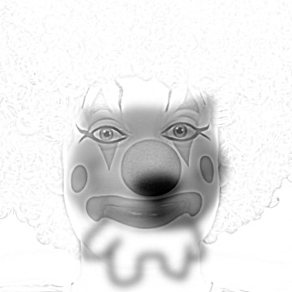
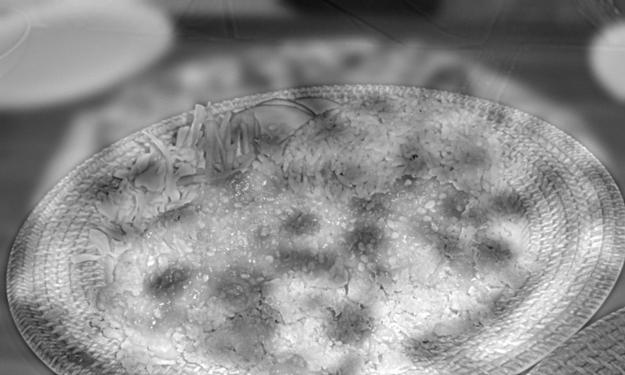
Clown + fox
A morph between two faces. Up close you see the clown's makeup, eyes and curly wig, and from far away you see the fox's dark nose and the drawn body underneath.
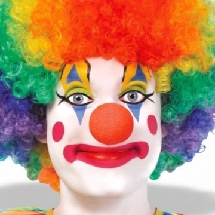
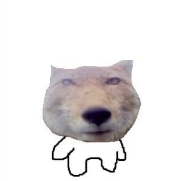
Rice + pizza
A morph between two different dishes. Up close you see the woven plate, the grains of rice and the shredded cabbage, and from far away it turns into a pepperoni pizza. The rice is used for the high frequencies since it is mostly fine texture, while the pizza can be recognised from the big round pepperoni, which are still visible after a heavy blur.
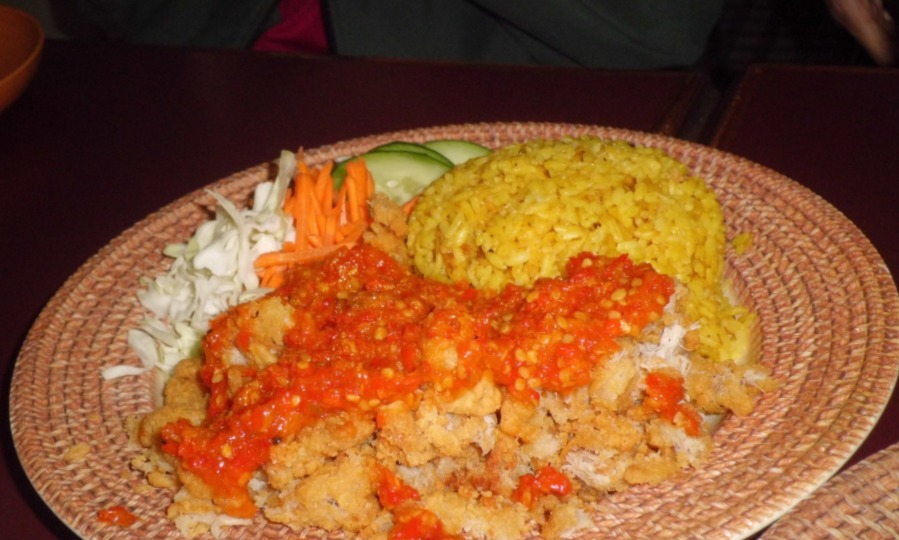
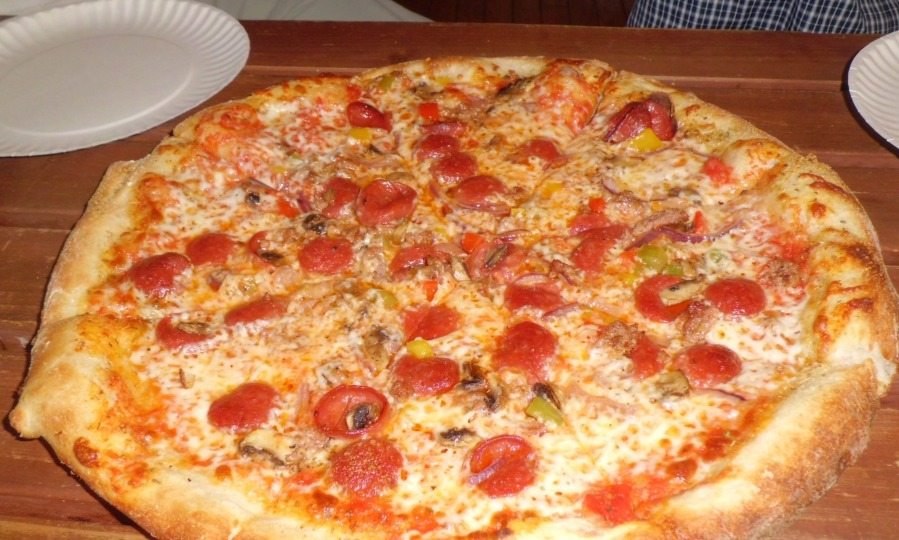
Bells & Whistles: colour
All four combinations were tried: colour in the high frequency image, the low frequency image,
both, or neither. The same hybrid_image works for all four, since a grey image just
gets added to every colour channel of the other.
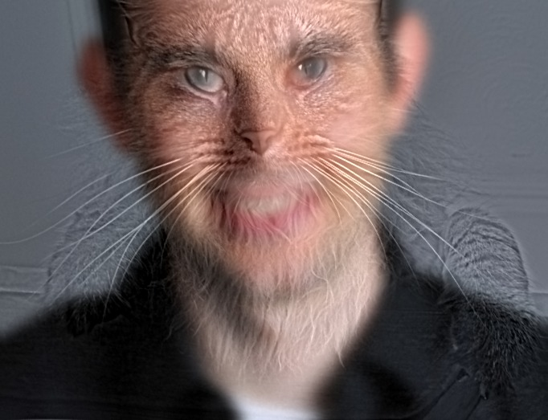
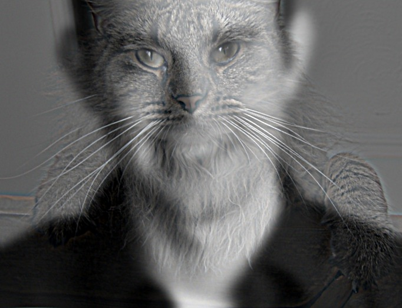
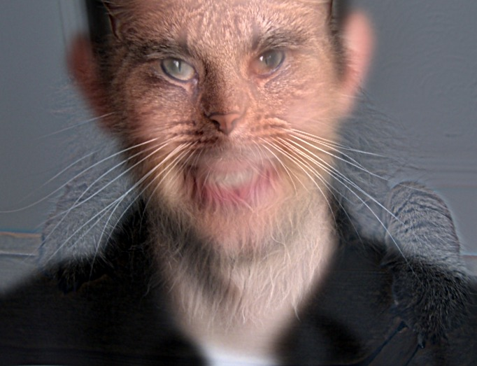
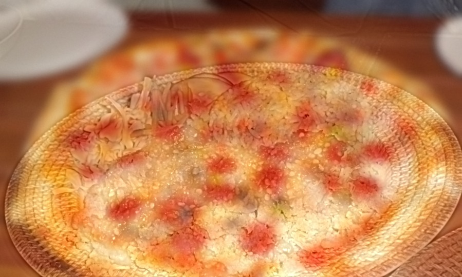
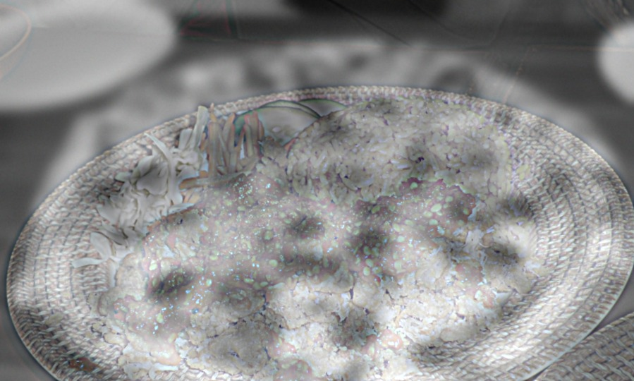
Colour works best in the low frequencies. Colour mostly changes slowly over large areas (a whole face is skin coloured, a whole pizza is orange), so most of it is in the low frequencies anyway. High-passing a colour image only leaves thin coloured fringes along the edges, so colour in the high frequency image barely changes anything, and "both" looks almost the same as low only. Colour in the low frequencies makes the far away image stronger (the red pepperoni and orange cheese are easy to see from a distance), while the grey high frequency details still show up close. The downside is that it can make the low frequency image a bit too strong up close too. For the rice and pizza, the pepperoni is so bright that the pizza can still be seen when looking at the rice up close.
Part 2.3: Gaussian and Laplacian stacks
A Gaussian pyramid blurs and then halves the image at each level, while a stack only blurs and
never shrinks the image, so every level is the same size. In a pyramid, the same kernel applied to
an image that is half the size covers twice as much of the original image. So to make a stack
behave the same way, sigma is doubled at every level instead (level i is level i - 1 blurred with
sigma 2i-1 x sigma). The Laplacian stack is the difference between neighbouring Gaussian
levels (a band of frequencies about one octave wide), and the last level is the blurriest Gaussian
level, so adding up the whole Laplacian stack gives back the original image (the largest error is
1.1e-16). 6 levels starting from sigma = 2 are used, and it is all built from scratch on top of
blur.
def gaussian_stack(im, levels, sigma):
stack = [im]
for i in range(1, levels):
stack.append(blur(stack[-1], sigma * 2 ** (i - 1)))
return stack
def laplacian_stack(im, levels, sigma):
g = gaussian_stack(im, levels, sigma)
return [g[i] - g[i + 1] for i in range(levels - 1)] + [g[-1]]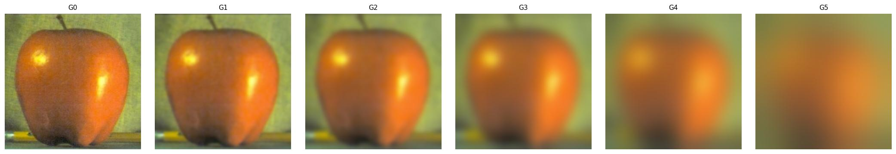
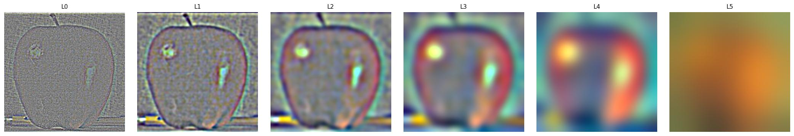
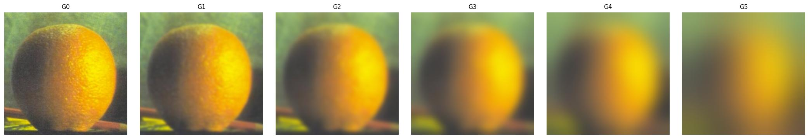
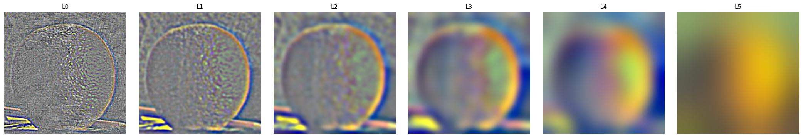
Recreating Figure 3.42
Szeliski's Figure 3.42 shows levels 0, 2 and 4 of the apple and orange Laplacian stacks, each weighted by the mask at the same level (left and middle columns), and their sum (right column). The last row adds up all the levels. Here is the same figure made with my stacks:
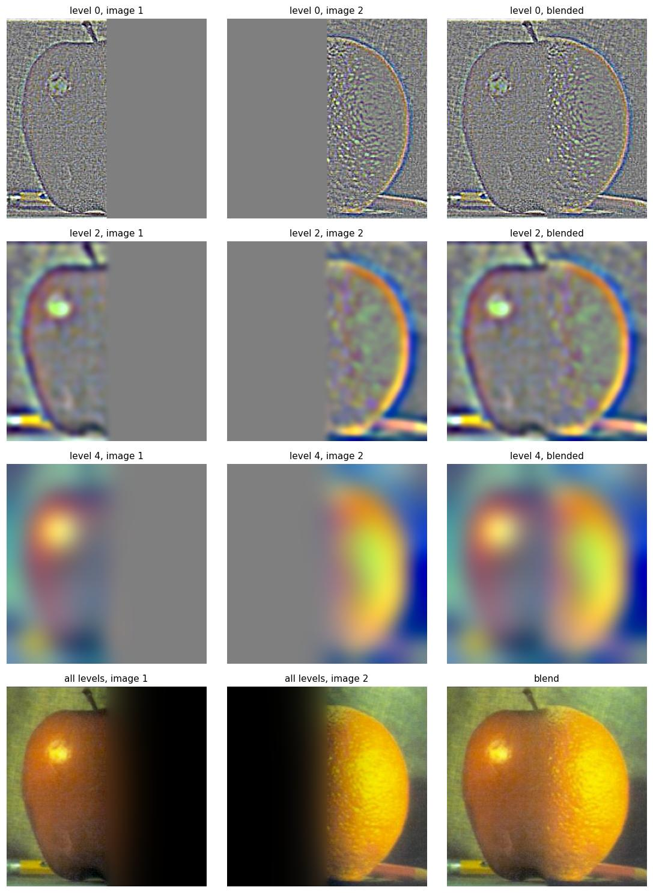
Level 0 only has edges and fine texture (like the dimples on the orange peel), and the mask there is almost a hard line. By level 4 there are only blobs of colour and lighting, and the mask has blurred into a wide, gradual transition. This comes from using the matching level of the mask's Gaussian stack for each level, which is the main idea behind the blending in Part 2.4.
Part 2.4: Multiresolution blending
Main idea: to blend image A into image B with a mask M (1 where A should show), build Laplacian stacks for A and B and a Gaussian stack for M, combine each level as Mi LAi + (1 - Mi) LBi, and then add up the levels. The Gaussian stack of the mask is what smooths the seam. The high frequency levels get a sharp transition (so the details do not overlap and look ghosted), and the low frequency levels get a wide transition (so colour and lighting change gradually and there is no visible seam). For colour images the same mask is used on each of the three channels.
def masked_stacks(im1, im2, mask, levels, sigma):
l1 = laplacian_stack(im1, levels, sigma)
l2 = laplacian_stack(im2, levels, sigma)
gm = gaussian_stack(mask, levels, sigma)
if im1.ndim == 3:
gm = [m[..., None] for m in gm]
return [m * a for m, a in zip(gm, l1)], [(1 - m) * b for m, b in zip(gm, l2)]
def blend(im1, im2, mask, levels, sigma):
parts1, parts2 = masked_stacks(im1, im2, mask, levels, sigma)
return np.clip(collapse(parts1) + collapse(parts2), 0, 1)The oraple

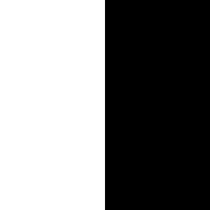
To compare, here is the same mask used in three ways: pasted directly, as one blurred mask (the blurriest level of its stack, so one very soft transition), and with the full multiresolution blend.
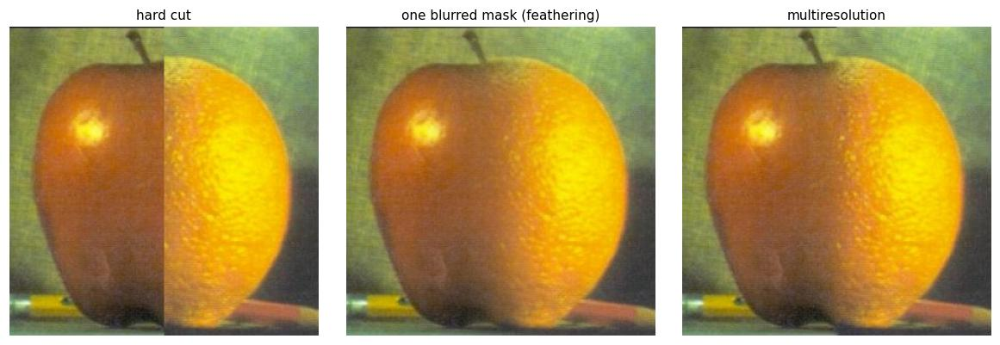
The hard cut has an obvious line down the middle. Feathering hides the change in colour, but in the wide overlap the apple's smooth skin and the orange's dimples are averaged together, so the middle looks ghosted and washed out. The multiresolution version keeps the orange's texture sharp right up to the middle, while the colour still changes gradually.
Hikaru + sunflower (irregular mask)
A sunflower grows out of Hikaru's left half of the face (the right side of the photo). The sunflower photo has no background, so its alpha channel (how see-through each pixel is) gives the outline of the flower. The mask is that outline, kept only on the right of the line from between his eyes down to his chin. His head is tilted, so this line is tilted too, and each pixel is put on one side or the other using the sign of a cross product, so the line does not have to be vertical. In code, the flower is scaled up and moved so its centre sits on his left cheek, so the petals cover that half of his face and stick out past the side of his face over his hair and the background.
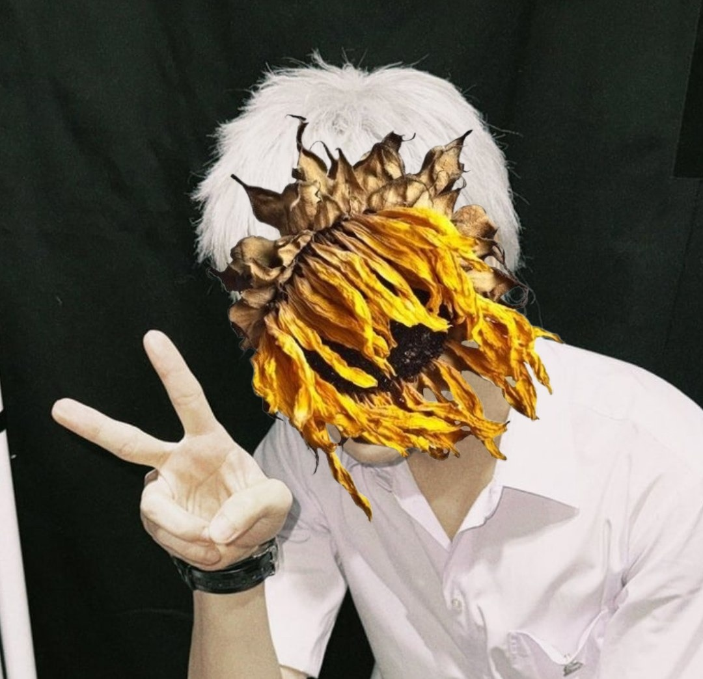
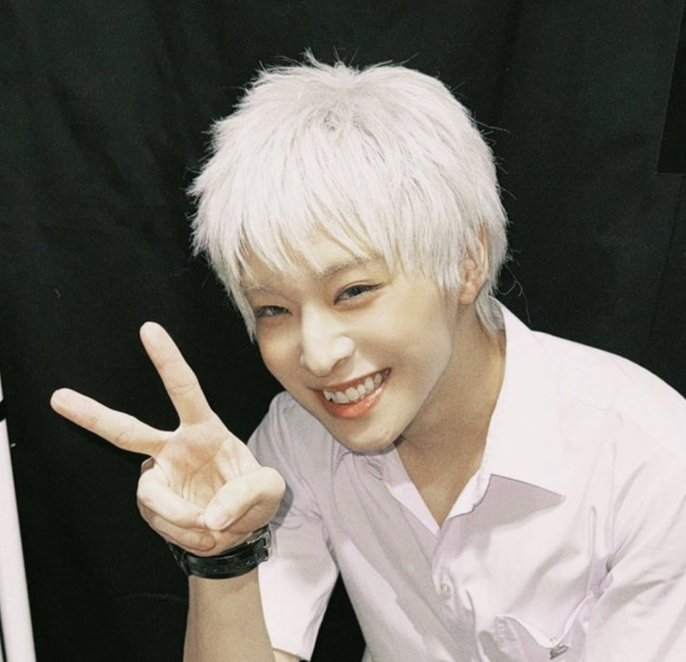
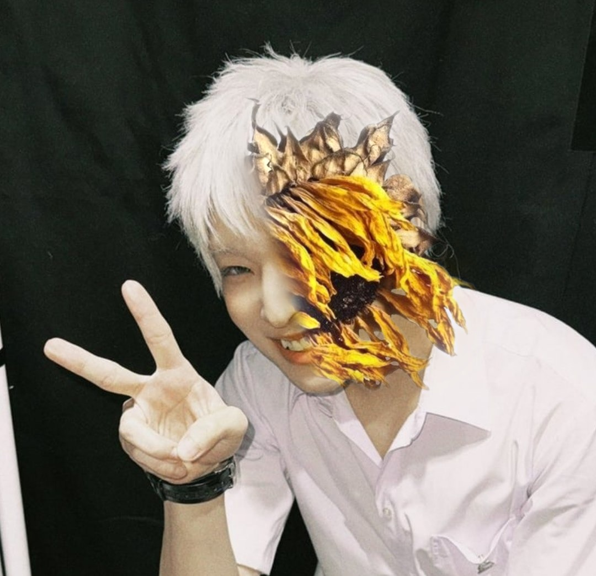
Where the sunflower photo is see-through, it is filled with Hikaru's photo before blending. The lower levels of the stack use a very blurred mask, so they mix in pixels from around the flower too, and if those were an empty background they would show up as a dark or light halo round the petals. Since they are Hikaru's own pixels, the petals blend straight into him. The centre of the flower was first put on the middle of his face, but then the dark seeds sat right next to the seam by his nose and smudged across it, and the petals barely reached past his cheek, so the centre was moved onto his cheek and the flower was made bigger.
The first version used 5 levels starting from sigma = 1, but the petals still looked like they were stuck on top of his face, since level 0 of the mask's stack is the unblurred mask, so the finest details still switch from flower to face in one pixel. The number of levels, sigma and the mask are all free choices, so they were tuned to make it look more blended. Two things were changed. Since the see-through parts are filled with Hikaru's pixels, a deeper stack no longer causes a halo, so the full 6 levels starting from sigma = 2 are used, which gives the colour a wider, smoother transition. And the mask is blurred (sigma = 8) before its Gaussian stack is built, so even level 0 fades over a few pixels, and the petal edges and the seam down his face fade into his skin instead of ending sharply.
With a mask blur of 16 the edges of the petals turn see-through and his face shows through them, which looks ghosted rather than blended. A blur of 8 fades the edges into him while the flower itself stays solid, which is why 8 was chosen.
Snail + eye (irregular mask)
For the second irregular mask, an eye is placed in the centre of the snail's shell. In code, the eye photo is scaled so the iris is the same size as the innermost whorls of the shell (a scale of about 0.2), and the centre of the iris is moved onto the centre of the spiral. The mask is a circle slightly bigger than the iris, so a thin ring of eyelid is blended in too.
The same 6 levels and sigma = 2 as the oraple were tried first, but the mask is small and the white background is close to the edge of the shell. The mask at the last level was so blurred that it spread well outside the shell, and a brown haze from the skin in the eye photo showed up on the white background. So 5 levels starting from sigma = 1 are used instead, which keeps the widest transition at about the size of the shell's whorls.
The Laplacian stack of my favourite
Similar to Figure 10 in the paper, this shows every level of the masked eye (left), the masked snail (middle) and their sum (right), with all the levels added up in the last row.
Bells & Whistles: colour
The results above are all blended in colour by using the same mask on each channel. Here they are in greyscale as well to compare:
In greyscale the oraple does not look much like an oraple, since the main difference between the two fruits is their colour. The snail + eye still looks fairly seamless in grey, since the eye is close in brightness to the shell, but in colour the blue-green iris stands out more against the brown shell. For Hikaru + sunflower, the petals are close in brightness to his skin and hair, so in grey the flower mostly stands out by its texture, while in colour the yellow makes it stand out much more. Colour is mostly in the low frequencies, where the transition has to be wide, and the last levels of the stack handle that. So the final results are kept in colour.
What I learned
The most important thing I learned is that a lot of image processing becomes simpler when you think of an image as layers of frequencies. Sharpening, hybrid images and blending seem like different things, but they all use the same idea: split the image into low and high frequencies with a Gaussian, and then do something different to each part. Sharpening boosts the high frequencies, hybrid images take the low frequencies of one image and the high frequencies of another, and blending uses a different mask for each band of frequencies. It also explained why sharpening cannot fully fix a blurry photo (the high frequencies are gone, not hidden), and why one blurred mask either leaves a seam or looks ghosted, while a stack of masks does neither.